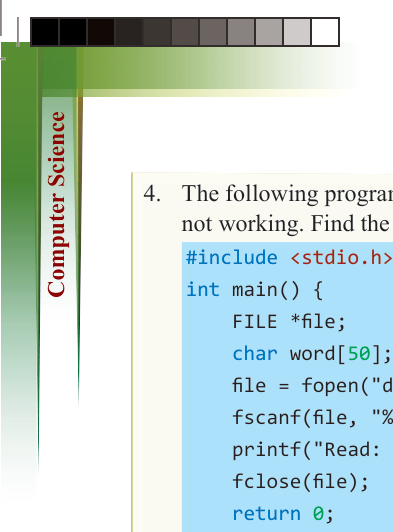
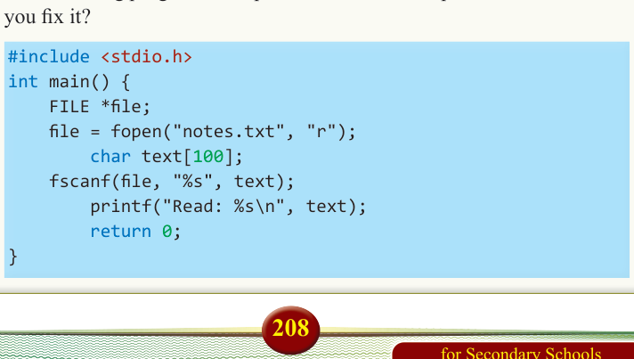
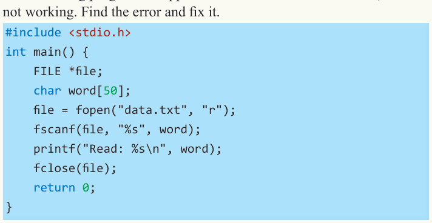
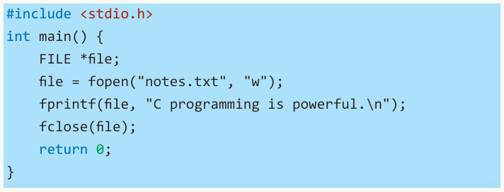

for Secondary Schools
4. The following program is supposed to read one word from a file, but it is not working. Find the error and fix it.

#include <stdio.h> int main() {
FILE *file; char word[50];


file = fopen("data.txt", "r");


fscanf(file, "%s", word);


printf("Read: %s\n", word);


fclose(file);


return 0;


}
5. Modify the following program so that it does not overwrite the file but instead adds new text to the end of the file.

#include <stdio.h> int main() {
FILE *file; file = fopen("notes.txt", "w"); fprintf(file, "C programming is powerful.\n"); fclose(file); return 0;
}
6. Write a program that counts and prints the number of characters in a file named “story.txt”.
7. The following program has a problem. What is that problem, and how can you fix it?
#include <stdio.h> int main() {
FILE *file; file = fopen("notes.txt", "r"); char text[100]; fscanf(file, "%s", text); printf("Read: %s\n", text); return 0;
}